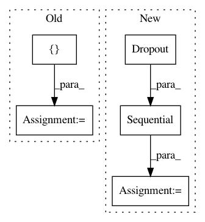

509453992838a524f6442d4e0f07a034390ae1f7,layers/eight_mile/pytorch/layers.py,ConvEncoderStack,__init__,#ConvEncoderStack#Any#Any#Any#Any#Any#Any#,283
Before Change
first_layer = ConvEncoder(insz, outsz, filtsz, pdrop, activation)
subsequent_layer = ResidualBlock(ConvEncoder(outsz, outsz, filtsz, pdrop, activation))
self.layers = nn.ModuleList([first_layer] + [copy.deepcopy(subsequent_layer) for _ in range(layers - 1)])
self.output_dim = outsz
def forward(self, input_bct: torch.Tensor) -> torch.Tensor:
x = input_bct
After Change
conv = Conv1DSame(insz, outsz, filtsz)
act = get_activation(activation)
dropout = nn.Dropout(pdrop)
if hidden_last:
self.conv = nn.Sequential(BTH2BHT(), conv, act, dropout, BHT2BTH())
else:
self.conv = nn.Sequential(conv, act, dropout)
def forward(self, input: torch.Tensor) -> torch.Tensor:
In pattern: SUPERPATTERN
Frequency: 3
Non-data size: 5
Instances
Project Name: dpressel/mead-baseline
Commit Name: 509453992838a524f6442d4e0f07a034390ae1f7
Time: 2020-02-13
Author: dpressel@gmail.com
File Name: layers/eight_mile/pytorch/layers.py
Class Name: ConvEncoderStack
Method Name: __init__
Project Name: eriklindernoren/PyTorch-GAN
Commit Name: a4697d7e45e66a3264eb56dcf489d67d4df40d23
Time: 2018-04-23
Author: eriklindernoren@gmail.com
File Name: implementations/cgan/cgan.py
Class Name: Discriminator
Method Name: __init__
Project Name: philipperemy/keras-tcn
Commit Name: 0cfe82c6beb9a28a5ff7da81b86fa0e93c388f14
Time: 2019-11-20
Author: premy@cogent.co.jp
File Name: tasks/save_reload_model.py
Class Name:
Method Name: